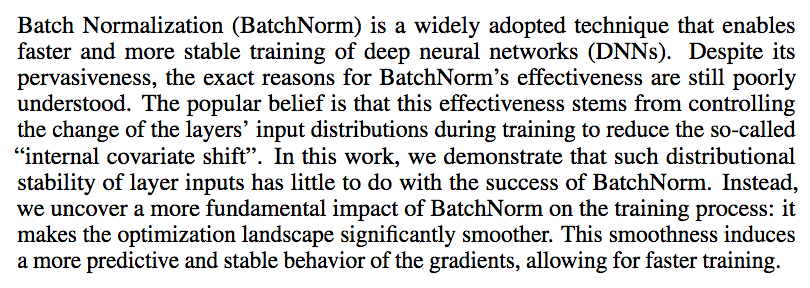

Deep Learning from Scratch - Week 8
Course starts soon..
Quiz
We will start now with a survey on your opinion on the course
The quiz link:
Quiz Link
It will be copied in Mattermost and in the Zoom chat.
Coding.Waterkant 2021
We had 8 Teams working on 4 Challenges
Reamining Sessions
The third coursera course:
Structuring Machine Learning Projects
Next Week: Peer Review on Projects
For next week there are no coursera homeworks, but you will discuss your project with another group in a "peer review process"
How it works
We create Breakout Rooms, and in each Breakout Rooms there are two groups.
The first group has 5 minutes to explain the project, and the other group 2 minutes for feedback and questions. Then group switches and the second group explains and first gives feedback. In total it should take 14-15 minutes.
Afterwards we come back to the main session and each group reports shortly what they learned from the others. So listen carefully.
What should be explained
Final Presentations
We divide in 2 days to avoid sessions which are too long.
Each group will have 20 minutes:
15 of presentation, 5 of questions
Both sessions are mandatory
Final Presentations, Part 1
21 of June
Final Presentations, Part 2
28 of June
QUIZ (15 mins)
1. Which approach would you use in your project? Train one model and try to fine-tune it, or train several models and see which one works better?
2. About hyperparameters search: which would you use? random, grid search, or a different solution? Is there a specific reason behind?
3. If we use batch normalization, should we stop using normalization before the input layer? Should we use batch normalization in only some layers or an all levels?
4. In which sense batch normalization makes the network train faster? If we add computations, shouldn't the single iteration be slower?
5. Now you have seen many techniques as regularization, momentum, dropout, batch normalization. Would you use them in your project? Why?
6. Let's say you have to classify the animals in one image. You want to know if there are any dogs, cats, ducks or horses in the image, or none of the above.
So you have 5 classes. How many output neurons would you use in your network?
And would you use softmax or sigmoid as an activation function? Why?
DISCUSSION AND ANSWERS
Paper of the Week
How Does Batch Normalization Help Optimization?, Shibani Santurkar, Dimitris Tsipras, Andrew Ilyas, Aleksander Madry,
Thirty-second Conference on Neural Information Processing Systems, NeurIPS 2018
Exercise
We go through the programming assignment that were planned for this week.Poll about next week
Since next week there is no assignment, we can go through an example all together.For the next week